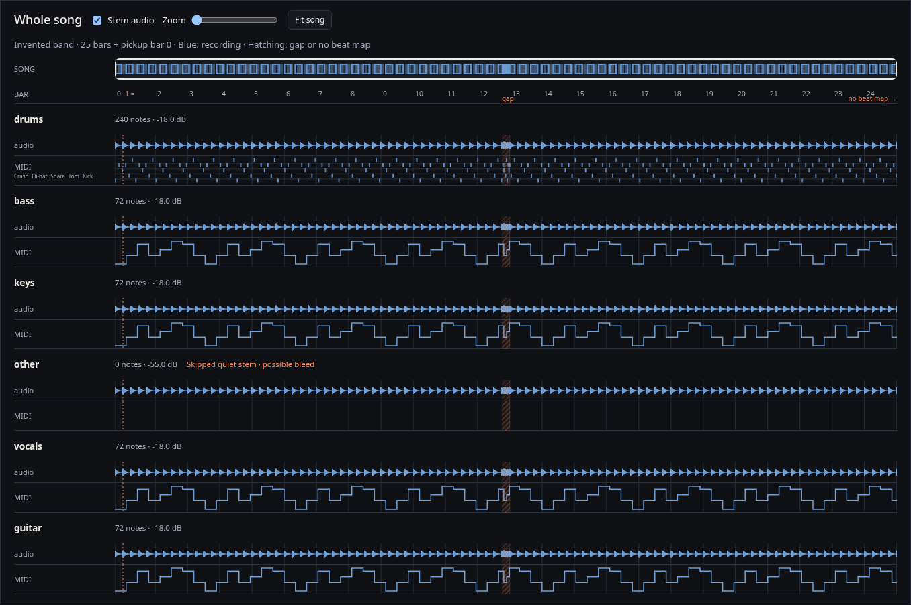

G64: until sections exist, the 32 px song strip shows recording density and a viewport outline. Click or drag to navigate, or use arrows and Home/End. Zoom keeps the current center; Fit restores the whole song. G61: orange hatching marks true gaps and uncovered audio; no invented bar numbers after the map stops.

Labels 150 px · overview 32 px · ruler 28 px · headers 46 px · audio 32 px · MIDI 44 px. Main's lens, Notes, Mine and section controls arrive in parts 2 and 3. All material here is invented.